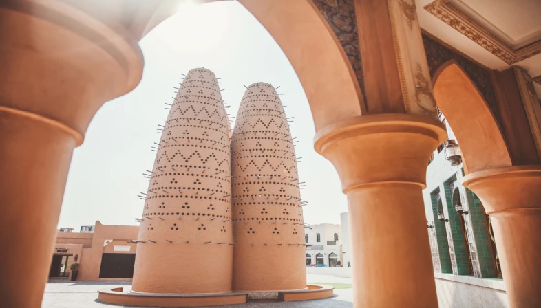

Uno dei luoghi da vedere a Doha è Katara Beach, tra le pochissime spiagge pubbliche del Qatar che offrono emozioni e divertimento.
La spiaggia si trova in una posizione pittoresca ed è una delle principali attrazioni turistiche della capitale.
Tra gli sport acquatici che offre, si può provare l'emozione di volare con il parasailing (parapendio in acqua).
Dietro un canyon, nel deserto della penisola di Zekreet, si incontra un'altra delle attrazioni imperdibili del Qatar
la Città del Cinema, ricreazione contemporanea di un antico villaggio arabo. Rinomata per la sua serena bellezza
regala ai visitatori le suggestioni di una città fantasma del Far West americano.

il Katara Cultural Village, incarnazione della vibrante cultura del Paese.
Una perfetta attrazione storica che ospita un teatro, giardini, moschee dal design elegante, una gallerie d'arte.
le “Singing Dunes”, le dune "che cantano" dell’Inland Sea, a Khor Al Adaid.
Una magnifica riserva naturale a pochi chilometri da Doha, con un proprio ecosistema, diventata un sito UNESCO.
È uno di quei rari posti al mondo dove il mare s’insinua in profondità nel cuore del deserto.
❮
❯